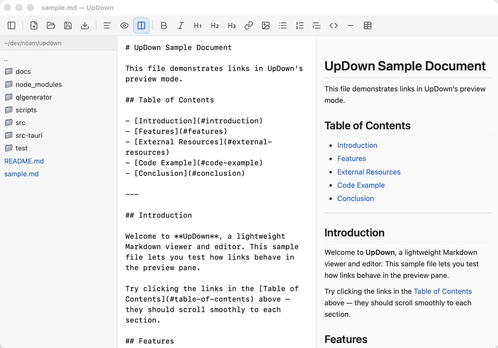
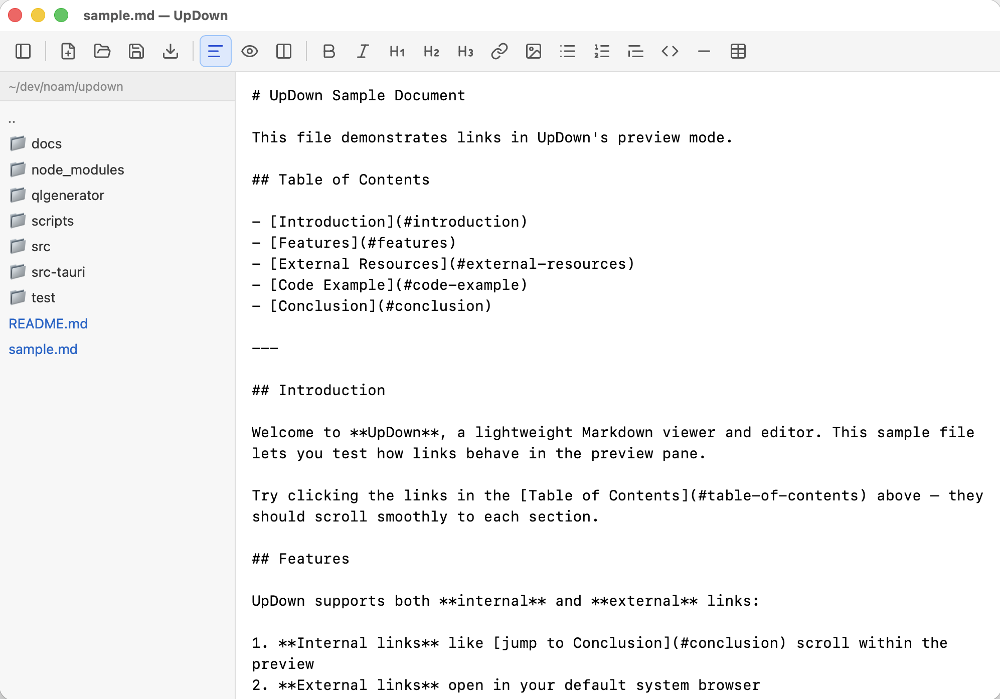
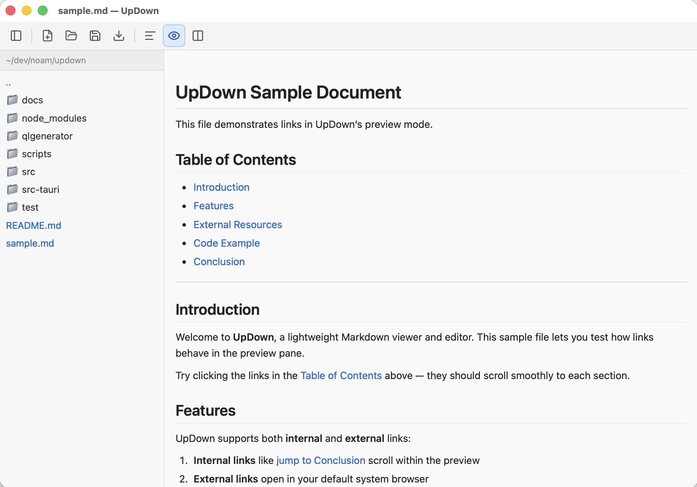
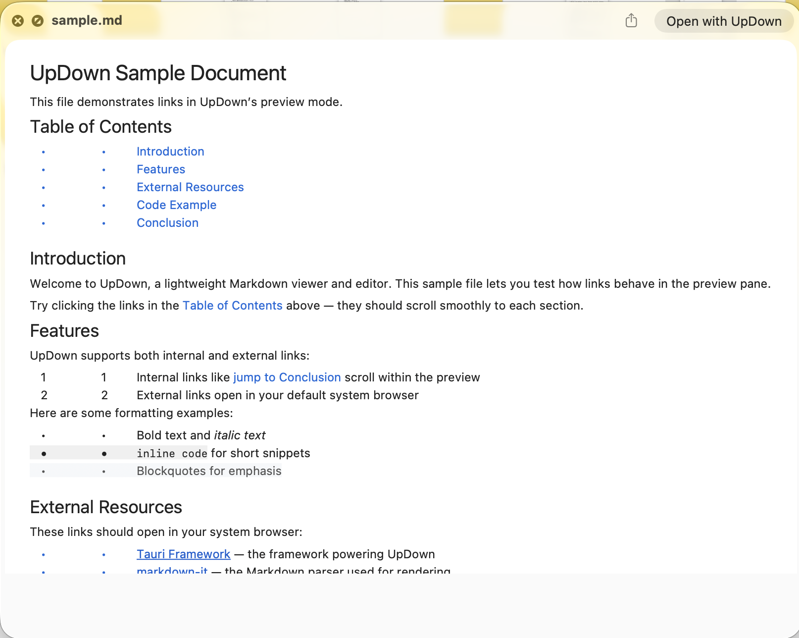

Three view modes
Switch between Source, Preview, and Split — side-by-side editing with live render.
Markdown, refined
UpDown is a lightweight Markdown viewer and editor — native on macOS, instant in the browser. Edit, preview, present slides, and manage files without the bloat.

Everything you need to draft, review, and share Markdown — from quick notes to polished slide decks.
Switch between Source, Preview, and Split — side-by-side editing with live render.
Marp-style decks with --- separators, themes, keyboard nav, and fullscreen present mode.
Native macOS app with Quick Look, plus a browser version with guest mode and Google Drive.
Bold, italic, headings, links, images, lists, blockquotes, code blocks, tables, and horizontal rules.
Rendered output updates as you type — debounced for smooth performance.
Flowcharts, sequence diagrams, and more render inline in preview.
Search and replace in the editor with keyboard shortcuts (⌘F / ⌘⌥F).
Hebrew and other RTL paragraphs align automatically based on content.
Browse markdown files in a resizable sidebar with persistent state.
New, open, save, and save as — via toolbar or native dialogs. PDF viewing too.
Drop .md or .pdf files onto the window to open them instantly.
Changes save automatically after a short idle period when a file is open.
Print a formatted preview from the toolbar (⌘P).
Scale preview from 50% to 200% for comfortable reading.
Press Space in Finder to preview .md files without opening the app.
Clean editing surfaces that stay out of your way.



Pick the experience that fits — a native desktop app or a zero-install web app.
Run UpDown in your browser at updown.eshkoli.com/app/. Same editor, slides, find/replace, Mermaid, and print.
A native app built with Tauri 2 — small footprint, system WebView, and macOS integrations like Quick Look.
Apple Silicon build — drag to Applications and start writing.
xattr -d com.apple.quarantine /Applications/UpDown.app
Open the web app in seconds, or download the macOS app for offline work.